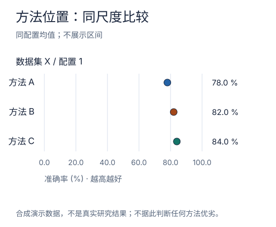
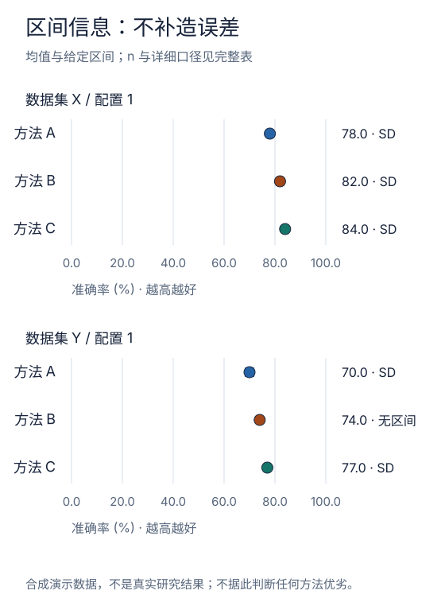
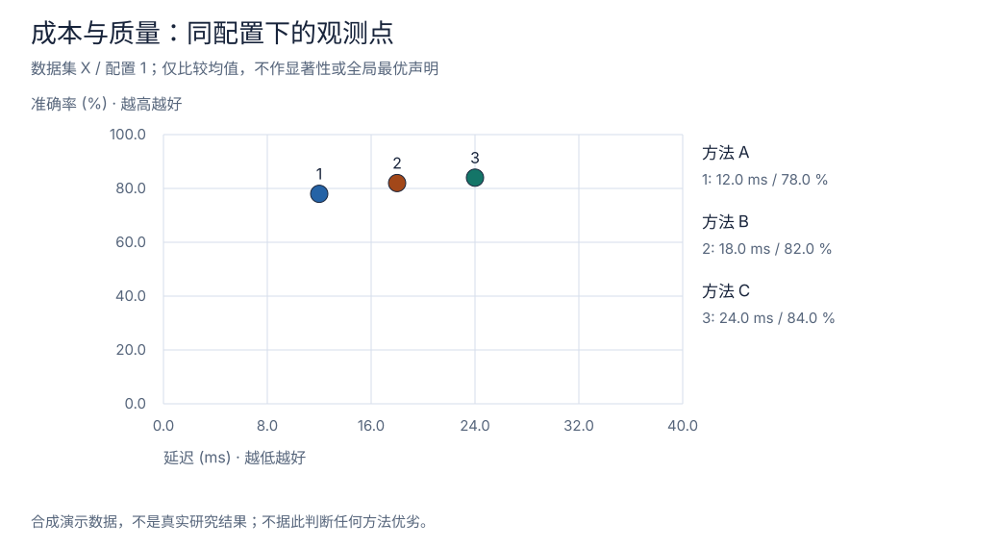
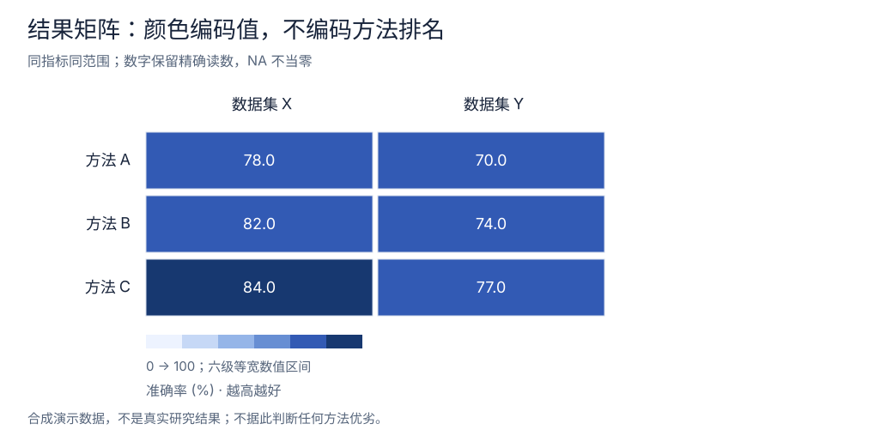

COMPARE WITH CONTEXT
多个实验，
不止一张柱状图。
将均值、不确定性、跨数据集一致性与成本权衡分开读。方法颜色固定，图型服务于问题。
合成示例：3 个方法 × 2 个数据集 × 2 个指标，12 条摘要；一条未测量，一条只有均值且 n 未知。
配置与统计口径
当前示例均属“配置 1”。正式任务替换为硬件、精度、batch、测量范围等真实条件；存在差异时分组展示，不直接归因方法优劣。
01 · 方法位置
紧凑版适配双栏，窄屏可在图内横向滚动。


02 · 区间信息
紧凑版适配双栏，完整区间数值见原图与表格。


03 · 成本与质量
保留足够宽度呈现双轴与方法身份；窄屏可横向滚动。


04 · 全局矩阵
完整保留两组数据，窄屏可横向滚动。


让每个值都可追查
完整表保留配置、状态、n、区间类型和来源。视觉摘要不能代替全量数据。